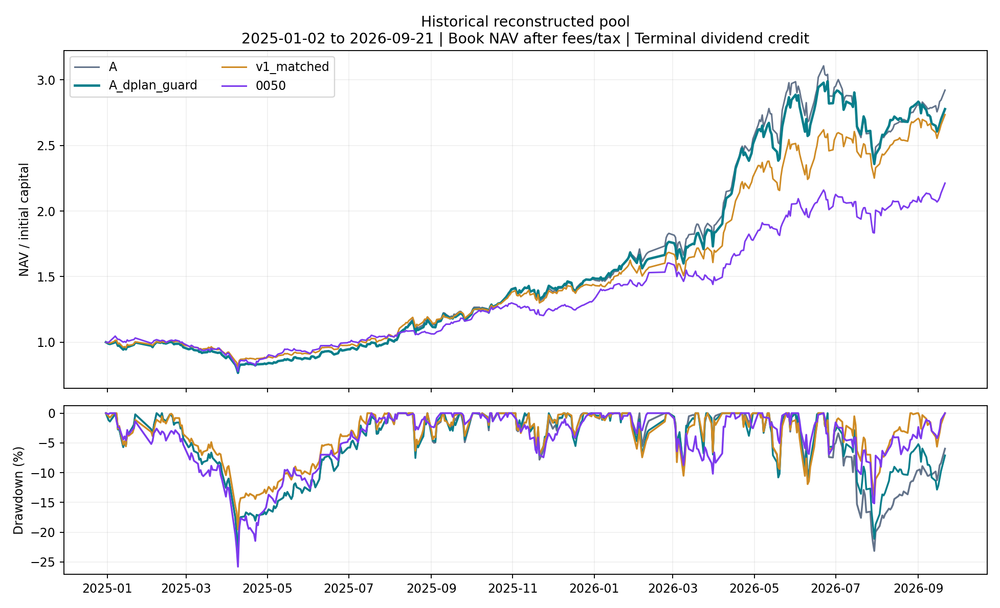
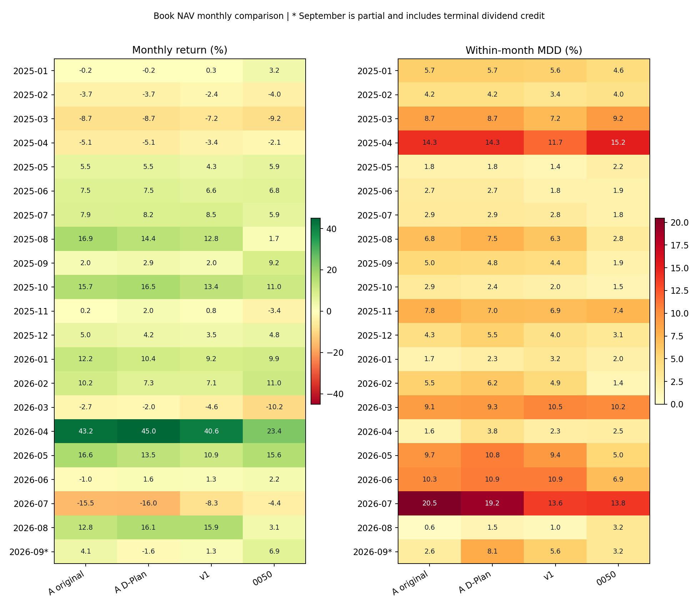
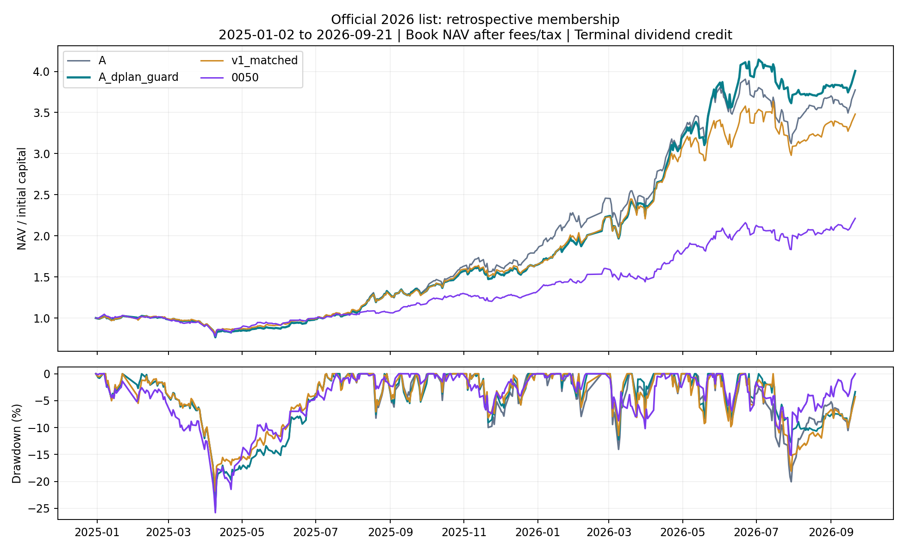
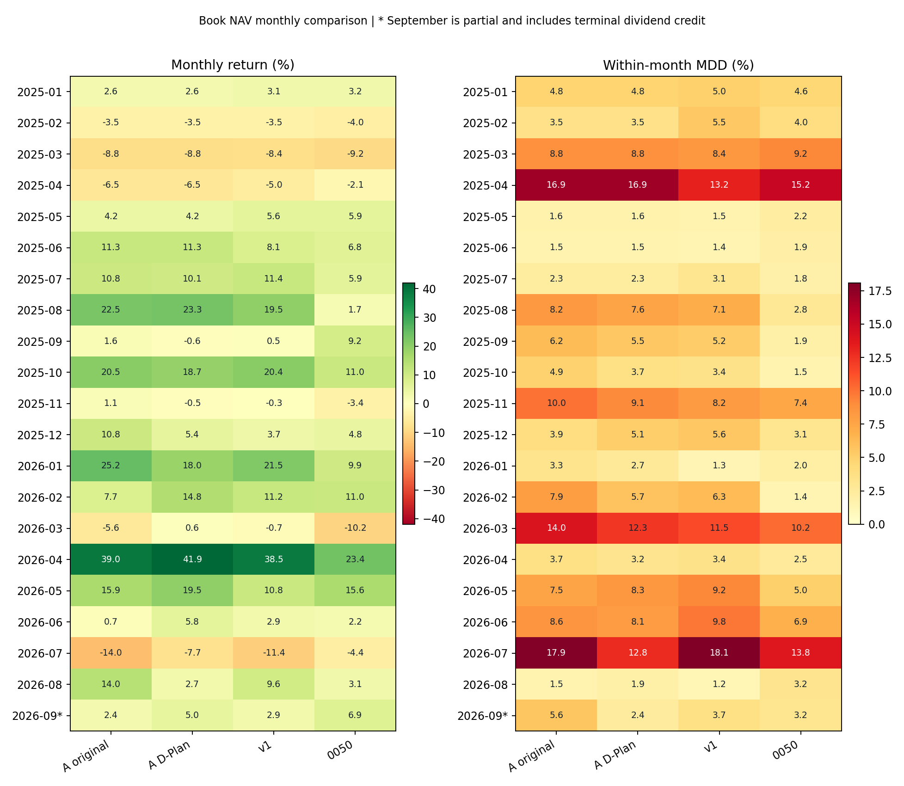

v2 A｜官方文件完整複核與回測
十份官方文件已逐一核對；固定 A 與公式相容版均已完整重跑。正式提交仍為 BLOCK，不能把本報告當成已通過比賽所有規則的成績。
期間為 2025-01-02 至 2026-09-21，共 417 個完整交易日，初始本金 10 億元。1 月 1 日休市；9 月 22 日執行時尚未收盤，因此不用當日不完整行情。歷史池 A 固定 p052，官方事後池固定 p049；本輪沒有再選參數，v3 不再使用。
先看三件事：原策略績效可以重現；D-Plan 股數推導需要修正；Active Share 及正式結算接入仍缺證據。詳細操作已整理為 每日單頁入口。
結論先看
| 項目 |
結果 |
| 原 A 重播 |
兩軌的 NAV、持股、成交、委託均與凍結結果完全相同 |
| 公式相容版 |
只處理權重序列化與零股異動，不改動能參數 |
| 帳務與時序 |
兩軌獨立稽核、實體截斷重播通過 |
| 正式送件 |
尚未放行：AS、公司事件細則及平台帳本／收件仍需接通 |
| v3 |
退出现行流程；原程式與結果保留 |
這次改正什麼
官方要求先從目標權重算出整張目標股數，再減掉前日實際庫存。舊程式先決定股數、再反算位於取整邊界的權重，浮點序列化可能少算一張；配股後若有零股，整張目標減現有庫存也無法變成千股倍數。
A_dplan_guard 將權重放在同一整張區間內，再精確回算股數。含零股的既有股票先續抱，不對該股下無法符合字面公式的委託；其他股票繼續運作。這是保守的相容性假設，主辦方尚未提供零股和除權日待執行委託的完整細則。
指南和 schema 要求公式一致，反例註解卻說部分不一致僅警示，因此以下只能量化「不符合字面公式」，不能把每列都算成主辦方拒件或一般違規。
| 股票池 |
版本 |
計畫列數 |
Decimal 不符 |
float 不符 |
涉及零股列 |
| 歷史池 |
原 A 固定版 |
1568 |
766 |
298 |
222 |
| 歷史池 |
A 公式相容版 |
1461 |
0 |
0 |
0 |
| 官方事後池 |
原 A 固定版 |
1609 |
693 |
187 |
117 |
| 官方事後池 |
A 公式相容版 |
1501 |
0 |
0 |
0 |
Decimal 按序列化後十進位數字嚴格回算；float 則模擬一般浮點向下取整。兩者差異證明邊界編碼不穩定，官方伺服器數值實作尚未公布；不能挑其中一個數字當作已知拒件數。
列數包含研究終點後尚未執行的最後計畫；不是主辦方警告次數。舊版凍結檔案未覆寫，修正版本另存，以便核對變動。
績效比較
本輪主表改用比賽帳面 NAV。 股息先列應收，到模擬期末才入現金；economic NAV 在除息時就加應收，另列回撤供核對。兩者最終報酬一致，途中曲線與月報酬可能不同。
歷史股票池
使用重建的 2024 年底股票池；部分股票不在 2026 年官方名單，因此此軌不符合正式比賽白名單。
| 版本 |
總報酬 |
NAV 最大回撤 |
含應收回撤 |
交易日 |
成交筆數 |
雙向換手 |
量測硬超限日 |
計畫不可行日 |
| 原 A 固定版 |
192.21% |
23.70% |
23.67% |
415/417 |
1566 |
25.15× |
0 |
2 |
| A 公式相容版 |
177.78% |
23.70% |
23.67% |
394/417 |
1452 |
25.76× |
0 |
22 |
| v1 同口徑 |
173.54% |
19.55% |
19.53% |
393/417 |
4340 |
34.20× |
9 |
19 |
| 0050 費後買持 |
121.28% |
25.79% |
24.59% |
1/417 |
1 |
0.90× |
不適用¹ |
5 |


| 版本 |
持股檔數 |
現金比範圍 |
累計費稅／百萬元 |
期末股息入帳／百萬元 |
| 原 A 固定版 |
20–30 |
1.14%–20.87% |
111.82 |
67.55 |
| A 公式相容版 |
20–30 |
0.95%–20.67% |
115.26 |
77.15 |
展開 21 個月明細：報酬 / 月內最大回撤
| 月份 |
原 A 固定版 |
A 公式相容版 |
v1 同口徑 |
0050 費後買持 |
| 2025-01 |
-0.19% / 5.70% |
-0.19% / 5.70% |
0.31% / 5.57% |
3.21% / 4.56% |
| 2025-02 |
-3.67% / 4.21% |
-3.67% / 4.21% |
-2.42% / 3.44% |
-3.95% / 3.95% |
| 2025-03 |
-8.69% / 8.69% |
-8.69% / 8.69% |
-7.17% / 7.17% |
-9.24% / 9.24% |
| 2025-04 |
-5.09% / 14.28% |
-5.09% / 14.28% |
-3.38% / 11.71% |
-2.14% / 15.23% |
| 2025-05 |
5.48% / 1.84% |
5.48% / 1.84% |
4.27% / 1.39% |
5.87% / 2.22% |
| 2025-06 |
7.46% / 2.74% |
7.46% / 2.74% |
6.56% / 1.79% |
6.81% / 1.92% |
| 2025-07 |
7.94% / 2.92% |
8.21% / 2.92% |
8.47% / 2.76% |
5.94% / 1.78% |
| 2025-08 |
16.95% / 6.80% |
14.40% / 7.53% |
12.76% / 6.31% |
1.67% / 2.81% |
| 2025-09 |
1.98% / 4.99% |
2.92% / 4.78% |
2.02% / 4.41% |
9.17% / 1.88% |
| 2025-10 |
15.69% / 2.89% |
16.54% / 2.42% |
13.39% / 2.01% |
11.01% / 1.49% |
| 2025-11 |
0.21% / 7.81% |
2.00% / 7.02% |
0.84% / 6.91% |
-3.43% / 7.42% |
| 2025-12 |
5.04% / 4.26% |
4.19% / 5.53% |
3.51% / 3.97% |
4.80% / 3.10% |
| 2026-01 |
12.17% / 1.68% |
10.35% / 2.32% |
9.24% / 3.20% |
9.87% / 2.01% |
| 2026-02 |
10.18% / 5.53% |
7.34% / 6.21% |
7.07% / 4.87% |
10.97% / 1.41% |
| 2026-03 |
-2.70% / 9.08% |
-1.97% / 9.34% |
-4.56% / 10.51% |
-10.18% / 10.18% |
| 2026-04 |
43.20% / 1.61% |
45.01% / 3.81% |
40.63% / 2.34% |
23.37% / 2.54% |
| 2026-05 |
16.56% / 9.71% |
13.52% / 10.80% |
10.94% / 9.39% |
15.55% / 5.05% |
| 2026-06 |
-0.96% / 10.27% |
1.62% / 10.91% |
1.35% / 10.88% |
2.17% / 6.91% |
| 2026-07 |
-15.48% / 20.45% |
-16.00% / 19.20% |
-8.35% / 13.62% |
-4.38% / 13.82% |
| 2026-08 |
12.82% / 0.57% |
16.12% / 1.50% |
15.88% / 1.02% |
3.14% / 3.21% |
| 2026-09＊ |
4.10% / 2.62% |
-1.61% / 8.06% |
1.32% / 5.62% |
6.93% / 3.17% |
官方名單事後情境
此軌把 2026 年公布的 150 檔名單套回 2025 年，含成分股前視偏誤。 它可以檢查指定名單的模擬路徑，不能解讀成當年可事前部署的報酬。
| 版本 |
總報酬 |
NAV 最大回撤 |
含應收回撤 |
交易日 |
成交筆數 |
雙向換手 |
量測硬超限日 |
計畫不可行日 |
| 原 A 固定版 |
277.51% |
25.39% |
25.36% |
359/417 |
1606 |
24.77× |
0 |
49 |
| A 公式相容版 |
300.59% |
25.39% |
25.36% |
365/417 |
1501 |
23.93× |
0 |
38 |
| v1 同口徑 |
248.15% |
21.81% |
21.80% |
405/417 |
4776 |
36.07× |
7 |
11 |
| 0050 費後買持 |
121.28% |
25.79% |
24.59% |
1/417 |
1 |
0.90× |
不適用¹ |
5 |


| 版本 |
持股檔數 |
現金比範圍 |
累計費稅／百萬元 |
期末股息入帳／百萬元 |
| 原 A 固定版 |
20–30 |
1.19%–23.05% |
141.09 |
83.18 |
| A 公式相容版 |
20–30 |
1.19%–23.05% |
131.87 |
105.01 |
展開 21 個月明細：報酬 / 月內最大回撤
| 月份 |
原 A 固定版 |
A 公式相容版 |
v1 同口徑 |
0050 費後買持 |
| 2025-01 |
2.59% / 4.77% |
2.59% / 4.77% |
3.10% / 5.01% |
3.21% / 4.56% |
| 2025-02 |
-3.54% / 3.54% |
-3.54% / 3.54% |
-3.47% / 5.49% |
-3.95% / 3.95% |
| 2025-03 |
-8.78% / 8.80% |
-8.78% / 8.80% |
-8.40% / 8.40% |
-9.24% / 9.24% |
| 2025-04 |
-6.49% / 16.94% |
-6.49% / 16.94% |
-5.04% / 13.23% |
-2.14% / 15.23% |
| 2025-05 |
4.23% / 1.60% |
4.23% / 1.60% |
5.65% / 1.51% |
5.87% / 2.22% |
| 2025-06 |
11.30% / 1.55% |
11.30% / 1.55% |
8.10% / 1.41% |
6.81% / 1.92% |
| 2025-07 |
10.77% / 2.33% |
10.08% / 2.33% |
11.37% / 3.07% |
5.94% / 1.78% |
| 2025-08 |
22.49% / 8.24% |
23.25% / 7.55% |
19.52% / 7.06% |
1.67% / 2.81% |
| 2025-09 |
1.60% / 6.18% |
-0.58% / 5.54% |
0.46% / 5.23% |
9.17% / 1.88% |
| 2025-10 |
20.51% / 4.94% |
18.71% / 3.73% |
20.44% / 3.41% |
11.01% / 1.49% |
| 2025-11 |
1.14% / 9.97% |
-0.54% / 9.07% |
-0.31% / 8.17% |
-3.43% / 7.42% |
| 2025-12 |
10.78% / 3.95% |
5.43% / 5.09% |
3.72% / 5.55% |
4.80% / 3.10% |
| 2026-01 |
25.15% / 3.26% |
18.04% / 2.66% |
21.45% / 1.30% |
9.87% / 2.01% |
| 2026-02 |
7.74% / 7.93% |
14.81% / 5.74% |
11.19% / 6.26% |
10.97% / 1.41% |
| 2026-03 |
-5.65% / 14.04% |
0.60% / 12.27% |
-0.73% / 11.47% |
-10.18% / 10.18% |
| 2026-04 |
38.96% / 3.67% |
41.94% / 3.23% |
38.49% / 3.42% |
23.37% / 2.54% |
| 2026-05 |
15.91% / 7.49% |
19.47% / 8.35% |
10.82% / 9.24% |
15.55% / 5.05% |
| 2026-06 |
0.72% / 8.56% |
5.83% / 8.07% |
2.93% / 9.83% |
2.17% / 6.91% |
| 2026-07 |
-14.02% / 17.90% |
-7.68% / 12.81% |
-11.42% / 18.08% |
-4.38% / 13.82% |
| 2026-08 |
13.98% / 1.52% |
2.75% / 1.90% |
9.56% / 1.19% |
3.14% / 3.21% |
| 2026-09＊ |
2.37% / 5.64% |
4.97% / 2.43% |
2.88% / 3.68% |
6.93% / 3.17% |
「計畫不可行日」是前日規劃器明確以 INFEASIBLE 開頭、在該日未能產生調整的天數。組合可能因續抱仍未超限，但不代表每日運行順暢；此數與正式漏繳／警告不同，也不含所有名稱為 WAIT 的等待狀態。
¹ 0050 是單一 ETF 比較基準，不套用競賽 20–30 檔及股票白名單。它使用凍結的一次買入、費用與價格預算緩衝，因此不是 100% 滿倉的 0050 官方總報酬指數。
＊2026 年 9 月只到 9/21，且將整段模擬累積股息一次入帳。這會提高最後月份帳面報酬，不代表 9 月突然產生相同幅度的選股優勢。月內 MDD 以「前月末 NAV＋當月每日 NAV」計算。
v1 的硬性超限使它不具合規候選資格。本報告沒有模擬違規日交易回退、三次警告淘汰或 Active Share 失格，因此長期 shadow NAV 不能當作這些情況下的正式排名結果。
能與不能證明的事
相容版歷史報酬較原 A 低，官方事後池則較高；這說明零股處理會改變持倉路徑，不能當成一次修正就普遍提升績效。兩軌零量測硬超限只涵蓋各自股票池、檔數、現金及主被動權重限制；尚未包含完整官方 AS 與送件歷史。
前日完整訊號決定固定股數，下一交易日才用官方成交均價記帳；獨立截斷回放檢查未讀取未來行情。這不能消除先前用整段歷史挑參數的開發偏誤，也不能消除官方股票池事後選取的偏誤。
原 A 並不是最早構想的低換手版本：歷史參數允許零分差替換，4H 只驗覆蓋，現金／權重修正仍可能頻繁加减碼。不要把「保留股不全面重配」寫成「幾乎不交易」。
另有公司事件語意未能認證：歷史池相容版在 2025-07-21 計畫出清玉山金 1,146,000 股，翌日先配股 1% 再按固定委託賣出，仍留下 11,460 股。前日公式可以通過，但除權日是否調整待執行委託、SELL_ALL 如何認定，文件未說明。本輪保留事件與餘額，不宣稱所有 D-Plan 語意已符合。
官方假設全額均價成交，因此本輪不因成交量容量刪單。超過日量的模擬成交只能另作實盤限制，不影響本次競賽假設；缺均價仍不能憑空補成交。
正式比賽仍缺什麼
| 缺項 |
目前處理 |
| 30 檔 ETF 的歷史／每日前十大權重 |
UNKNOWN；沒有用現在持股回填過去 |
| AS 聯集、正規化與日期細節 |
等待可驗證的官方口徑；不能僅憑程式算出數字就認證 |
| 零股與除權日委託細則 |
本輪採凍結零股名稱、固定待執行股數的明示假設 |
| 官方帳本與平台回執 |
尚未接通；禁止將本機產檔標成已送件 |
| 真正未見期間 |
未提供；所有本輪歷史已參與研究開發 |
官方文件與每日操作
已讀完 10 份檔案，包括 5 份 PDF、官方 DOCX 模板、D-Plan 指南、schema 與正反 JSON 範例。原文、頁碼、衝突及不適用假設見 逐檔稽核。ETF 名單只列基金代碼，沒有持股權重。
證交所亦說明主動式 ETF 每日揭露持股，但這不等於本機已取得完整的歷史時間版本；TWSE 說明 與 野村每日 PCF 僅是後續資料接入的第一手來源。
每日入口 · 比賽須知 · 操作清單 · 自動化範圍
重現與證據
python3 scripts/run_official_v2.py --output outputs/official_v2_reproduction
python3 scripts/audit_official_v2.py --output outputs/official_v2_reproduction/historical_pit
python3 scripts/audit_official_v2.py --output outputs/official_v2_reproduction/official_ex_post
執行器拒絕覆寫已有結果；獨立稽核綁定程式、資料、設定和完整輸出雜湊。原 v2_A_best.py 不變，公式相容版由 src/official_v2_review.py 的隔離介面執行。
歷史池稽核 · 官方事後池稽核 · 事前研究規格
比較總表 · 全部月表